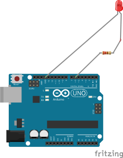
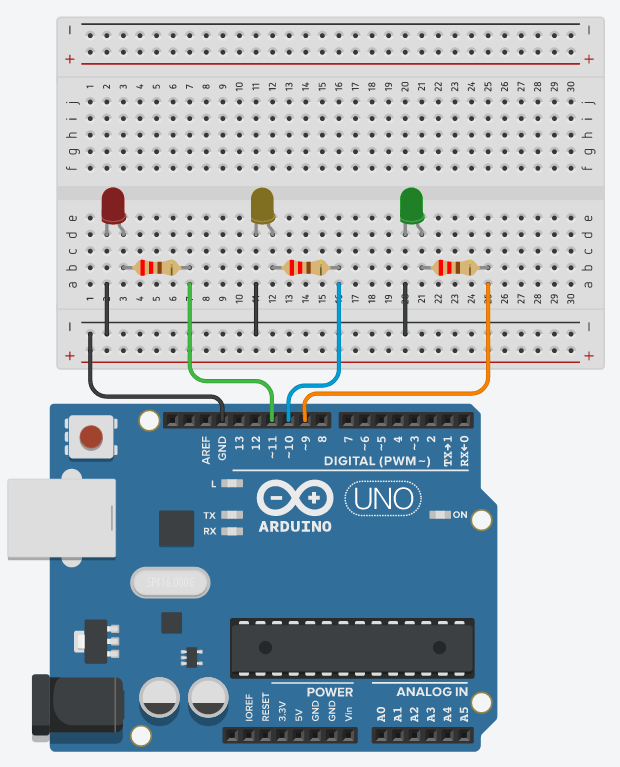

LEDs (External)
बाह्य LEDLight-emitting diodes show status. Need a current-limiting resistor (typically 220 Ω–330 Ω) so the LED does not burn out.
What it does · के गर्छ
Light-emitting diodes show status. Need a current-limiting resistor (typically 220 Ω–330 Ω) so the LED does not burn out.
Pins on the component · कम्पोनेन्टका पिन
| Pin | Type | Role |
|---|---|---|
| Anode (+, long leg) | Signal | Toward Arduino pin via resistor |
| Cathode (−, short leg) | Ground | To GND |
Connect to Arduino Uno · UNO मा जडान
Example wiring (you may use other pins if you update the code). See Uno pinout.

| Component | Arduino Uno | Why |
|---|---|---|
| Anode → resistor | D6 (PWM) | digitalWrite or analogWrite for brightness |
| Cathode | GND | Completes circuit |
Arduino code you need · आवश्यक कोड
Example use case · उदाहरण
Single LED blink — Matches the wiring diagram: one LED on pin D6 blinks on and off.
const int ledPin = 6;
void setup() {
pinMode(ledPin, OUTPUT);
}
void loop() {
digitalWrite(ledPin, HIGH);
delay(1000);
digitalWrite(ledPin, LOW);
delay(1000);
}
Traffic light sequence — Three LEDs on D6, D7, and D8 cycle green → yellow → red (wire three LEDs as in the diagram below).

const int red = 11, yellow = 10, green = 9;
void setup() {
pinMode(red, OUTPUT);
pinMode(yellow, OUTPUT);
pinMode(green, OUTPUT);
}
void loop() {
digitalWrite(green, HIGH);
delay(3000);
digitalWrite(green, LOW);
digitalWrite(yellow, HIGH);
delay(1000);
digitalWrite(yellow, LOW);
digitalWrite(red, HIGH);
delay(3000);
digitalWrite(red, LOW);
}